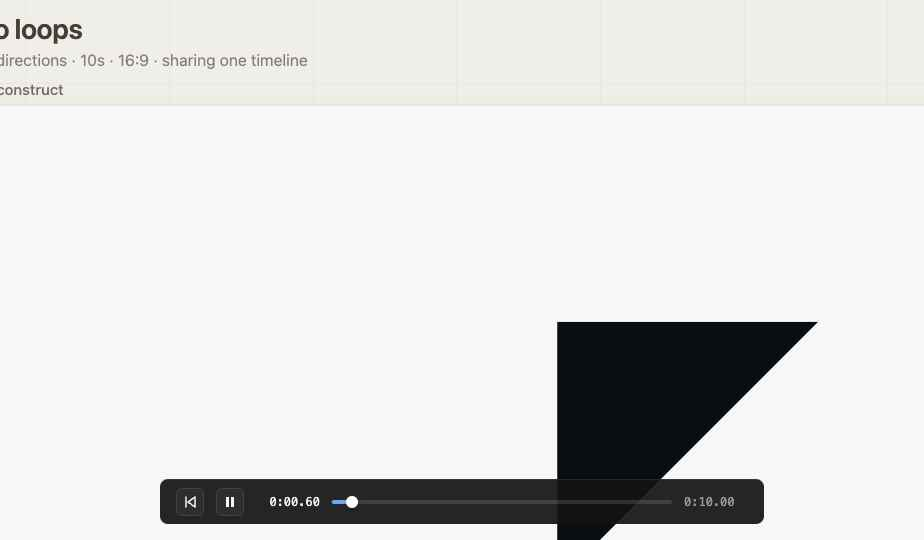
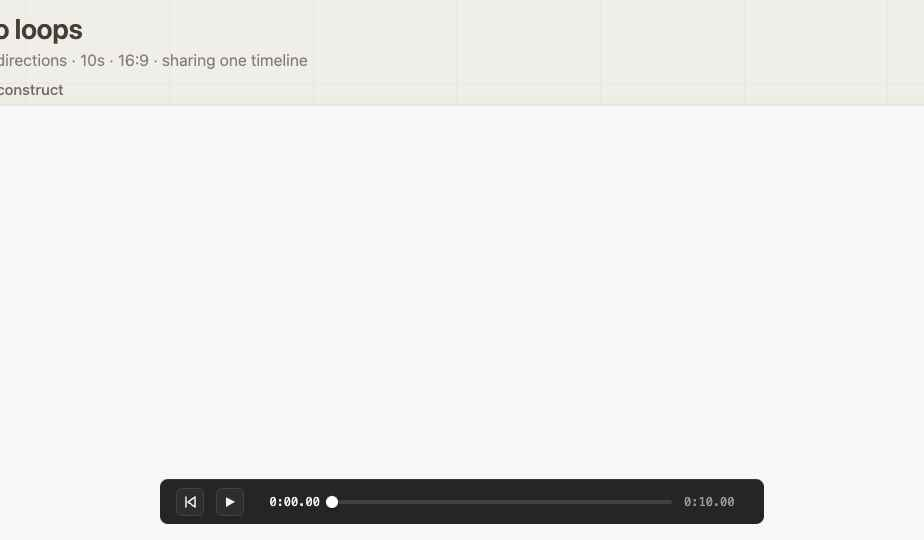
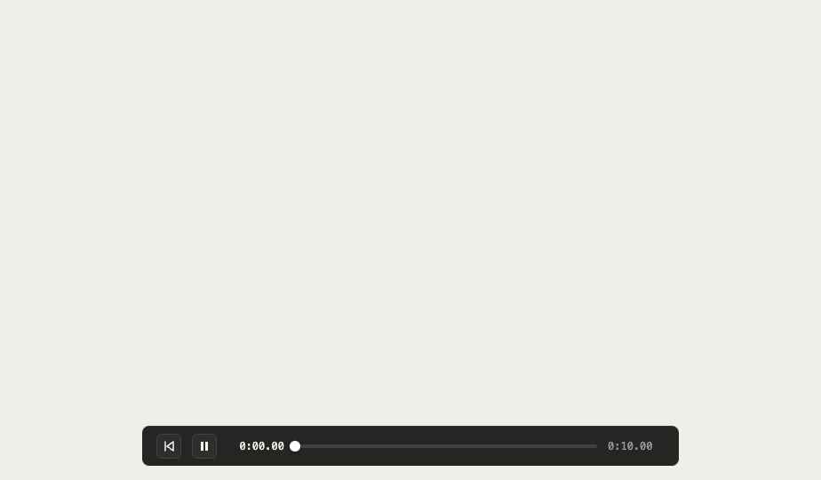
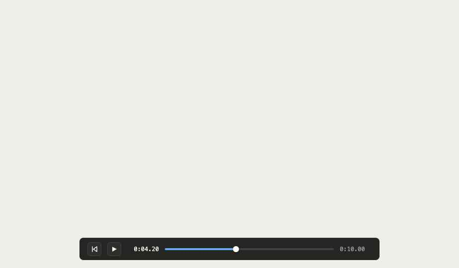
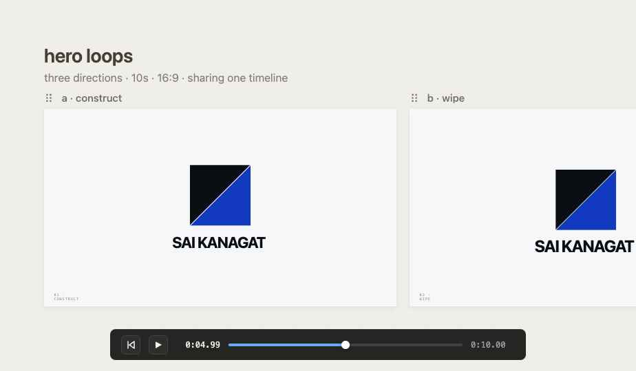

— 05 · the system appliedframes, layouts, fit-checks






A complete and confident visual language for everything I make — websites, decks, writing, invoices, and the small details in between. Anchored by one accent (ultramarine), one disc mark, and a typographic trio that does most of the talking. Six rules, on repeat.
Eames-warm, Ive-restrained. The disc is the brand's heartbeat — it appears at every scale and is the one ornament the system permits.
Anchor in ink, breathe in paper. Invert for moments, not pages. Sienna is for what matters — one accented element per visible region.
Tighten as you grow. Display goes to −0.015. Body sits at 0. Labels open up to +0.12 with UPPERCASE. Mono is a label, not a paragraph.
| where | say | don't say |
|---|---|---|
| Web copy | "making things, well." | "Unlock world-class creativity." |
| Buttons | "Start a project" | "Click here!!" |
| Errors | "that email doesn't look right — mind checking?" | "INVALID INPUT." |
| Empty states | "nothing here yet. that's the right kind of nothing." | "No data found." |
| Email signoff | — sai / warmly, sai | Best regards, |




